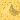
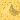
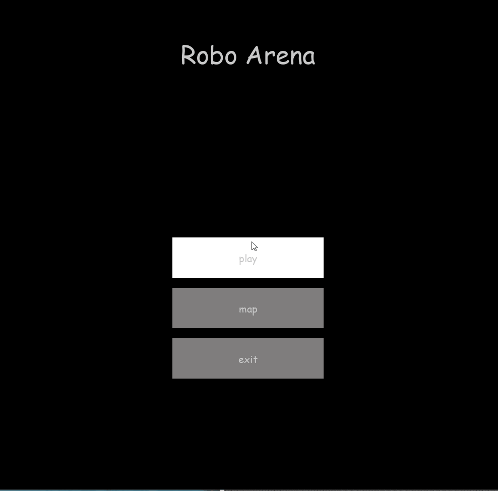
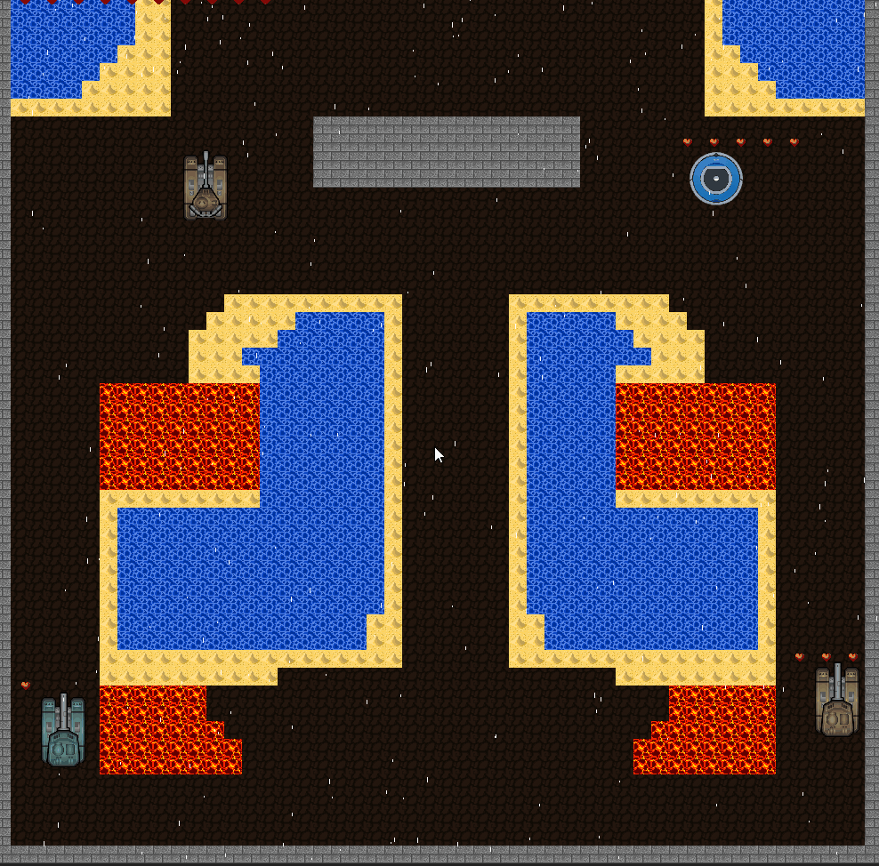
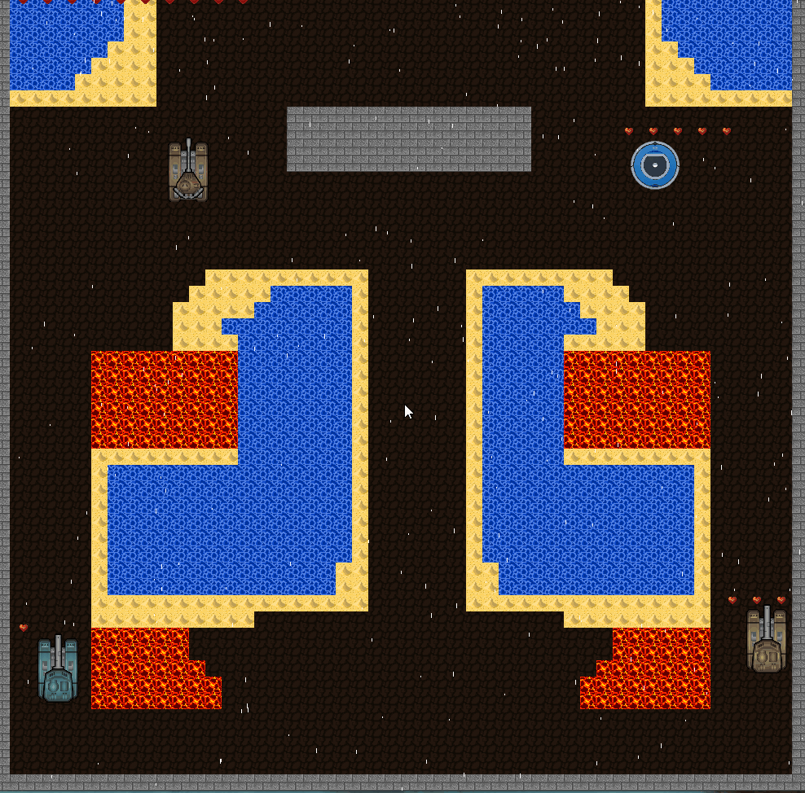

Project Summary
Since the split we started our game from scratch.
So we began with reimplementing what we already had before (see weekly reports)
Then the idea was to create a kind of rogue-like platform survival game but first we had to finish some more basics we had not done yet
Tiles
Since we did not yet do any work on visuals we started with creating three basic tiles, adding water and sand at a later point


 

How to save and load the background and render it
We use a .csv file that contains integers each refering to a a specific tile, which then is loaded into our background matrix.
This background is then used to draw the tiles at their given position when rendering the screen.
Main Menu
You can click on play to play the game, click on map to edit your current or create a new map or click on exit to quit the game.
When choosing to play you are prompted to choose a weather.
To go back to the menu press the esc-key at any time.

Custom Background
We implemented a map editor for editing the underlying csv files ingame.
While at first this was a feature created for ourselves to facilitate building more interesting maps we kept it as a feature.

pausing/unpausing
You can pause the game by pressing "f" and unpause the game by pressing "space". You are also abble to leave the game and go to the manu
by pressing "escape"

Collision
How do we check for collisions?
To effectivly collide with different objects we create masks of all surfaces which we want to check collisions with.
Tile Masks
We need a surface with every tiles which we want to check collisions with, at first we need a transparent screen
since we have it we have to blit the tiles on this screen, now we just have to build a surface from this screen and make a mask from it
we do this process for every tile type in each iteration in the game loop.
A mask has exactly as many pixels as the surface but the every pixel can just be transparent(0) or none-transparent(1).
Robot Mask
To build a mask for the robots and projectiles we create one from its surface.
Collision Check
To check for the collision we can check if there is an overlap between the
transparent pixels of two masks. We can also check for the area (overlap) of the collision so we know how many bits
are colliding which is usefull when checking if you are completely submerged inside water for example.
Sea
We check the area of the collision of the robot with the sea, so when we the whole robot is submerged, the
flag for collision is set so we can use this flag to do the robot slower or any other functionality
To be able to dive the car in the sea, we have to change the surface when there is collision between both masks. They way we do this is we
take the overlap mask(set pixels) and build a surface of it then we blit it on the screen with the same position as the robot with different color.

Lava
We check the area of collision of the robot with the lava, if we have a collision with 200 set bits the robot is slowed down
If the robot is completely inside the lave its slowed down even more.

Wall
The check of the collision between a wall mask and the robot is more complicated because we want to implement a realistic collision.
To do that we have to know exactly which corner of the robot is colliding with the wall. So we create surfaces for each corner and build
masks of them.


Now we just have to know where the wall is and in which direction the robot is facing so we can create a realistic collision.

Enemies
We implemented 3 types of enemies:
- A static robot that has a fixed position and angle and shoots periodically
- A patroling robot that moves in a straight path between two set borders.
If it detects the player in front of it stops and shoots at the players position
- A boss robot that follows you around hunting you down.
We used A* algorithm to calculate the shortest path between the boss and player.
While wall tiles are set as fixed borders, every other tile has a specific weight
associated with it. So if there is no other possibility the boss will also go
through lava to catch you!

Naturally with robot enemies there come projectiles flying at you.
Both the player (by pressing the f-key) and the enemies can shoot lava bullets at each other.

life
Every robot has a certain number of lives.

Player robot has 10, static robot has 1, patroling robot 3 and the boss robot has 5. Any hit does 1 damage
except the boss robot (it does 2 damage). And one damage destroys one life. when a robot has 0 lives it dies and disappears

Winning/Losing
when you have 0 lives you will lose the game and wenn you kill the boss robot you will win the game. Its eayser to win the game
when you start killing other robots first.
Will you be able to prove yourself in this fiery RoboArena?
Outlook
- More diverse levels with higher difficulties
- Tweaking maximum velocities and accerleration for player and enemies
- Scoreboard or story progression
- Transform the map builder into a level designer where you can
also place robots on the map for custom levels
- Custom images/animations for different robots and projectiles
- Add collectable items
- Local multiplayer
{kind=link}
{kind=link}